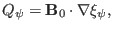
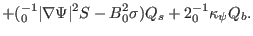
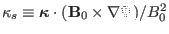

Next:
Eigenmode equations using as
Up:
Components of MHD equations
Previous:
component of momentum equation
Summary of component equations
For the ease of reference, Eqs. (
29
), (
82
), (
87
), (
99
), (
105
), (
), and (
119
) are repeated here:
(
120
)

(
121
)
(
122
)
(
123
)

(
124
)
(
125
)
(
126
)
where
,
,

, which is usually called the geodesic curvature,
, which is usually called the normal curvature.
Next:
Eigenmode equations using as
Up:
Components of MHD equations
Previous:
component of momentum equation
yj 2015-09-04
![[*]](crossref.png) ), and
(119) are repeated here:
), and
(119) are repeated here: